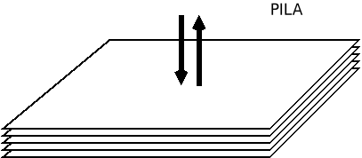
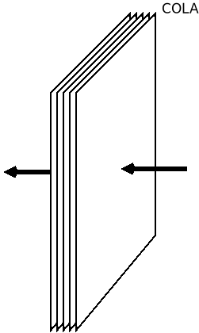

1.3. Arrays¶
El tipo más básico para almacenar una secuencia ordenada de valores es el array, que es un tipo particular de objeto:
let sec = []; // Una secuencia vacía.
sec instanceof Array; // true
sec instanceof Object; // true
typeof sec; // 'object'
Para crear uno podemos usar la notación del corchete o bien usar el constructor Array:
let sec1 = [1, 2, 3],
sec2 = new Array("a", "b", "c");
En ambos casos, se obtiene lo mismo. Es posible también, crear un array sin valores de una longitud determinada:
const arr1 = Array(10), // arr1 tiene diez posiciones, pero sin valor las diez.
arr2 = Array(5).fill(0); // arr2 tiene 5, pero con valor 0.
Los arrays, como otros iterables, soportan a partir de ES2015 el operador de dispersión (spread operator) que permite desempaquetar los elementos:
const arr1 = [1, 2],
arr2 = [3, 4];
console.log([...arr1, ...arr2, 5, 6]); // [1, 2, 3, 4, 5, 6]
function suma(a, b) { return a + b };
suma(1, 2); // Devuelve 3
suma(...arr1); // Equivalente a lo anterior.
Como en otros lenguajes de programación, la secuencia no tiene por qué ser de datos del mismo tipo:
let sec = ["a", 1, true, null, {x: 1}, function() { console.log("Hola"); }];
y es de naturaleza dinámica, por lo que podremos alterar los valores de sus elementos, añadir otros o eliminar algunos.
1.3.1. Acceso y manipulación¶
Para acceder a sus elementos puede usarse la notación del corchete:
sec[1]; // 1
sec[3]; // null
sec[4].x; // 1
sec[5] = "b"; // Sustituimos la función anónima por "b".
También existe el método .at que permite indicar un índice como argumento para devolver:
sec.at(1); // 1
sec.at(3); // null
La ventaja de este método es que permite indicar índices negativos y, entonces, se cuenta desde atrás como en el caso de Python:
sec.at(-1); // "b", último elemento.
sec.at(-3); // null, antepenúltimo elemento.
Tanto de una forma o de la otra, cuando se intenta obtener el valor de un
elemento que no existe, se devuelve undefined en vez de generarse un error:
sec[20]; // undefined
sec.at(100); // undefined
Si nos interesa obtener la posición de un elemento por su valor, podemos echar mano de .indexOf():
sec.indexOf(true); // 2
sec.indexOf("Este valor no existe"); // -1, porque no se encuentra.
Puede añadirse un seguno argumento con el índice desde el que se desea comenzar la búsqueda:
sec.indexOf(true, 3); // -1, porque no hay otro true.
En caso de que, simplemente, nos interese saber si el valor existe o no, sin importar su posición, puede usarse .includes():
sec.includes(true) // true
sec.includes(true, 3) // false, ya que no vuelve a encontrarse.
Podemos eliminar el valor de un elemento (que no el elemento mismo) con el operador delete:
delete sec[1]; // La posición 1 queda vacía, pero sigue existiendo como undefined
sec[2]; // true
sec[1]; // undefined
Puede conocerse su longitud a través de la propiedad .length:
sec.length; // 6.
La dinamicidad del tipo es tal que podemos alterar la longitud de la secuencia modificando el valor de esta propiedad:
sec.length = 8; // Ahora las posiciones 6 y 7, existen pero están vacías (undefined).
sec.length; // 8, no 6.
Si le asignamos un valor más pequeño, entonces eliminaremos los elementos sobrantes:
sec.length = 5;
sec.at(-1); // {x: 1}, ya que se ha perdido "b" y las otras dos posiciones indefinidas
También alteraremos el tamaño del array, si asignamos valor a una posición sin elemento:
sec[9] = "Final";
sec.at(-1) // 'Final'
sec.length; // 10. Entre la posición 5 y 8 hay valores indefinidos.
Además, dispone del método .slice() que permite extraer una parte de la secuencia indicando la posición inicial y la final (esta última sin incluir):
sec.slice(1, 3); // [undefined, true], la 3 no.
sec.slice(2, -1); // [true, null], la última no.
Si se deja sin especificar la primera posición se sobreentiende que es desde el principio y si se deja sin especificar la segundo hasta el final:
sec.slice(2); // [true, null, {x: 1}]
sec.slice(undefined, 3); // ["a", undefined, true]
sec.slice(); // Copia completa.
Por último, es posible manipular una parte de su contenido usando el método .splice(), que exige indicar la posición inicial, el número de posiciones y el valor de sustitución. Para indicar más valores de sustitución, pueden añadirse más argumentos:
sec.splice(1, 1, false); // Sustituye exclusivamente la posición 1.
sec.splice(-1, 0, "Nuevo elemento"); // Antes el último elemento, añade la cadena.
sec.splice(0, 2); // Elimina los dos primeros elementos.
sec.splice(1, 1, "A", "B"); // Sustituye la posición 1 por ["A", "B"]
sec.splice(1, 1, ...["A", "B"]); // Lo mismo.
sec.splice.apply(sec, 1, 1, ["A", "B"]); // Lo mismo, pero sin usar la notación ...
El método, además, devuelve un array con los elementos sustituidos:
sec = [1, 2, 3, 4, 5];
let desocupados = sec.splice(1, 2, "Ocupante");
sec; // [1,"Ocupante", 4, 5]
desocupados; // [2, 3]
1.3.2. Pila¶
En una pila los elementos se añaden o se consumen por el final:
Para poder usar un array como una pila, existen los métodos .push(), que añade elementos al final de la pila y .pop(), que los consume:
sec = []; // Pila vacía.
sec.push(1, 2); // Añadimos al final dos elementos: [1, 2]
sec.push(3); // Añadimos otros: [1, 2, 3]
sec.pop(); // Devuelve el último elemento (3) y lo elimina: [1, 2]
1.3.3. Cola¶
En una cola, por su parte, se consumen elementos por la cabeza y se añaden por el final:
Para tratar un array como una cola necesitamos método ya visto .push() y el método .shift() para eliminar el primer elemento:
sec = []; // Cola vacía.
sec.push(1, 2); // Añadimos al final dos elementos: [1, 2]
sec.push(3); // Añadimos otros: [1, 2, 3]
sec.shift(); // Devuelve el primer elemento (1) y lo elimina: [2, 3]
Nota
Existe también el método .unshift(), que
añade elementos por la cabeza y es análogo a .push().
1.3.4. Recorrido¶
Para recorrer todos los elementos tenemos varias alternativas:
La clásica de C:
for(let i=0; i<sec.length; i++) {
// Hacemos algo con el elemento sec[i].
}
La versión que recorre directamente elementos, más parecida a lenguajes como Python:
for(const e of sec) { // of, no in.
// Hacemos algo con el elemento e.
}
Una variante funcional a través del método .forEach():
sec.forEach((e, i, arr) => { // También puede usarse una función tradicional
// Hacemos algo con e (elemento), i (indice) o arr (el array completo).
});
Nota
Muchos métodos y funciones cuyo argumento es una
función de callback, permite
incluir un segundo argumento que defina el objeto de contexto (this) de
la función de callback. .forEach() no es una excepción:
sec.forEach(function(e) {
// Hacemos algo con e.
// El this de esta función es la cadena "Soy el contexto".
}, "Soy el contexto");
Por supuesto para poder redefinir el contexto es necesario usar funciones tradicional, no funciones flecha.
1.3.5. Otros métodos¶
Array dispone de bastante métodos, algunos de los cuales son muy útiles:
- Array.from()
Devuelve un array con todos los valores que contenga un dato iterable. Por ejemplo, una cadena es un dato iterable, así que:
Array.from("abc"); // [ 'a', 'b', 'c' ]
- .join()
Yuxtapone todos los elementos del array, utilizando el separador indicado:
sec = ["Uno" ,"que", "sabe", "reñir"]; sec.join(" "); // Uno que sabe reñir
- .flat()
Deshace los subarrays que contiene un array hasta la profundidad que defina el argumento (un nivel, si no se especifica nada):
let profundo = [1, [2 , [3, [4, 5]]]]; profundo.flat(); // Devuelve [1, 2, [3, [4, 5]]] profundo.flat(2) // Devuelve [1, 2, 3, [4, 5]] profundo.flat(Infinity); // Devuelve [1, 2, 3, 4, 5]
- .fill()
Rellena todo el array con el valor que se da como argumento:
const arr = Array(10); arr.fill("XXX");
Nota
Observe que
arres una constante, pero el array que representa puede cambiar de valor. Esto es así, porquearres una referencia a un objeto (un array en este caso particular) y que éste cambie su valor, no implica que la referencia cambie: la referencia sigue siendo al mismo objeto. En cambio, sí provocaría error:arr = ["soy", "otro", "array"] // Error.
En cambio:
const numero = 2;
provoca que la variable sea dos y siempre valga dos, porque hacer que número valga 3 implica hacer una nueva asignación y, por tanto, una nueva referencia:
numero = 3;
No hay forma de original de que el dato 2 se transforme en un 3. Esto es lo que distingue a los datos primitivos de los que no lo son.
- .find(), .findIndex()
Permite encontrar el primer valor (o su índice asociado, si es
.findIndex()) que cumpla con una determinada condición. La condición se define mediante la función que se le proporciona com primer argumento: cuando tal función devuelvetruela condición se considera satisfecha. Por ejemplo:sec = [1, 2, 4, 6, 5, 7, 9, 10]; sec.find(e => e % 3 === 0); // Devuelve 6 (el primer múltiplo de 3)
La función de callback, como en el caso de
.forEach(), también tiene acceso al índice (segundo argumento) y al propio array (tercer argumento).Nota
Estos métodos son una generalización de
.indexOf(), pero no admiten como segundo argumento un índice a partir del cual buscar, sino, como en el caso de otros métodos que admiten funciones de callback, un objeto de contexto alternativo para la función.- .every(), .some()
Comprueba si todos (
.every()) o al menos uno (.some()) de los elementos del array cumplen con la condición expresada en la función de callback:sec.some(e => e < 0); //false, porque ningún elemento es negativo. sec.every(e => e > 0); //true, todos los elementos son positivos.
- .filter()
Obtiene un array que contiene los elementos que pasan el filtro de la función de callback:
sec.filter(e => e % 3 === 0); // [6, 9], o sea, los elementos múltiplos de 3.
- .map()
Obtiene un nuevo array cuyos elementos son el resultado de aplicar a los elementos del original la función de callback:
sec.map(e => e % 2); // [1, 0, 0, 0, 1, 1, 1, 0]
- .reduce()
Obtiene un único valor como consecuencia de aplicar la función de callback sobre todos los elementos:
sec.reduce(function(res, e, i, arr) { return res + e; }, 0);
El primer argumento es la variable que recoge el valor de la iteración anterior. En este caso, lo único que se hace es devolver la suma de todos los elementos del array. El segundo argumento es el valor inicial que tomará
resla primera vez. Si no se proporciona, en la primera iteraciónrestomará el valor del primer elemento y la función se ejecutará a partir del segundo.
Nota
Estos últimos cinco métodos son muy habituales en los lenguajes de programación funcional.